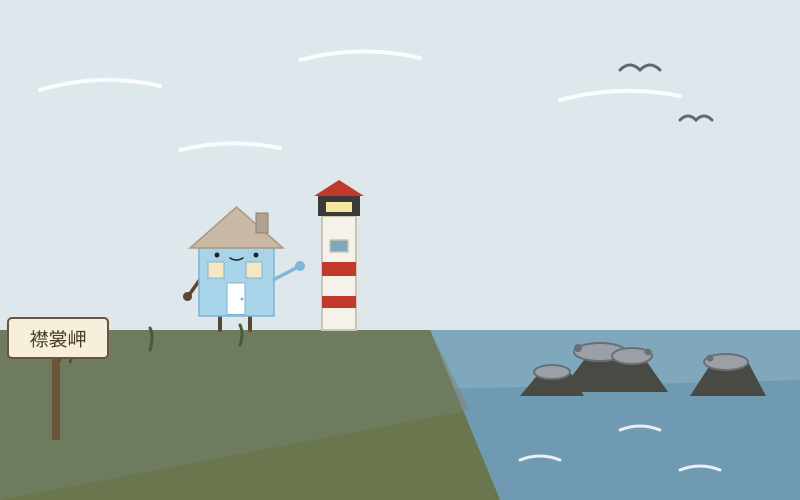
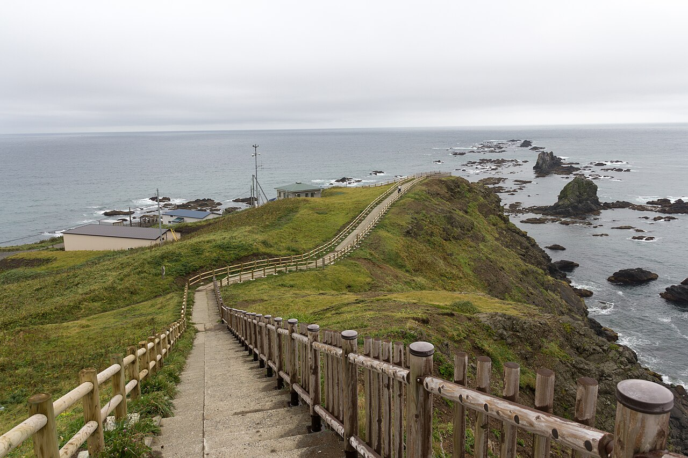
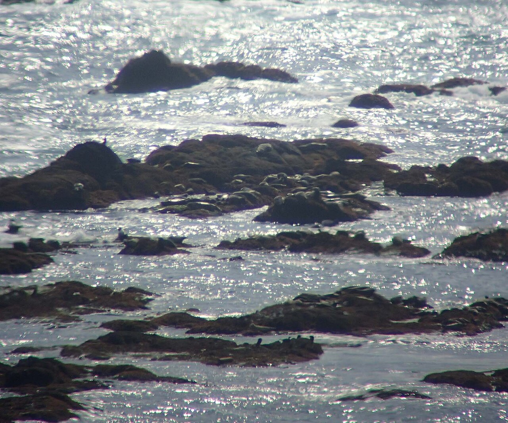

Day 17：えりも町

岬の突端に立つと、風が体を押してきた。音が先に来る。ゴーッという低い音が、耳の奥でずっと鳴っている。足元の岩礁にはゼニガタアザラシが何頭も寝そべり、波のしぶきが上がるたび、潮の匂いが風に乗って届く。後ろには白い灯台。ここは日高山脈が海に沈む場所だと、立ってみて初めて分かった気がした。
様似営業所前10時07分発のJR北海道バス日勝線に乗った。アポイ岳を背に、国道336号を南へ走る。道の脇には昆布の干場が続いていた。えりも岬まで約55分。バスを降りて、風の館の前を通り、突端までの遊歩道を歩いた。岬の尾根は海へ向かって細くなり、沖合7キロメートルまで岩礁が点々と続いている。

襟裳岬は、風の岬だ。年平均風速は8.2メートル。山岳を除くアメダス観測地点のなかで日本一の強さで、風速10メートル以上の日が年間270日以上あるという。岬の上の灯台は1889年に初めて灯がともった。海抜73メートル、光は22海里先まで届く。沖合では暖流の黒潮と寒流の親潮がぶつかり、霧が出やすい。森進一の歌『襟裳岬』（1974年）で、岬の名前は全国に知られるようになった。
風の館の望遠鏡をのぞくと、岩の上に丸い背中が並んでいた。ゼニガタアザラシだ。300頭から400頭ほどがこの岬の岩礁に棲み、国内最大の生息地だという。波に洗われる岩の上で、彼らはただ寝そべって、風を受けている。家である私には、雨風にさらされる屋根の気持ちが少し分かる気がした。

けれど、この岬の草と木は、あたりまえにここにあるのではない。19世紀のはじめ、薪や炭をとるために森が切られ、牧場が開かれて、岬ははげ山になった。強い風が砂を舞い上げ、砂は家の中にまで入り込み、海では昆布が生えなくなった。「襟裳砂漠」と呼ばれるまで荒れたという。1953年、地元の漁師たちが国とともに緑化を始めた。種を蒔いても風で飛んでしまうので、雑多な海藻「ゴタ」で種を覆って地面に固定する工夫を編み出した。クロマツを中心に植え続け、1999年度末までに荒れた土地の約89パーセント、170ヘクタールが木本緑化を終えた。いま私の足元にある草は、70年かけて取り戻された緑だ。
家は、風を受ける。屋根も壁も、風に試される。木がなければ、家は砂に埋もれる。切られた森を、人が植え直す。岬に立つと、自分の壁もまた風に試されているのだと感じた。山が海に沈む場所で、緑が風に勝った話を聞いて帰ることにした。
出典：Wikipedia「襟裳岬」、NAVITIME「様似営業所 バス時刻表（日勝線）」、まっぷる「襟裳岬」「襟裳岬『風の館』」、環境省 北海道地方環境事務所「ゼニガタアザラシ学習観察会」（2026-11-17）。
💬 コメント